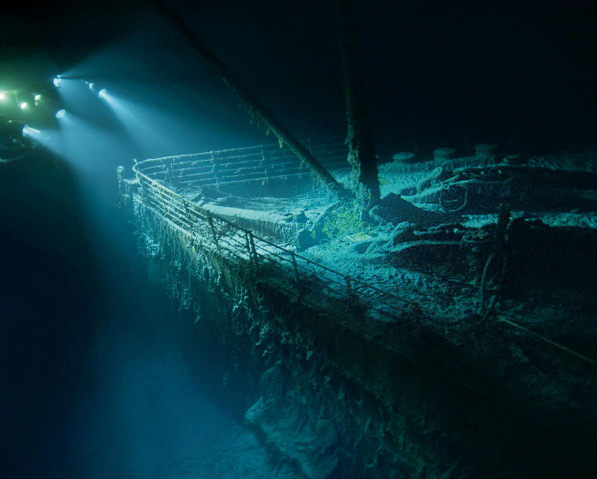
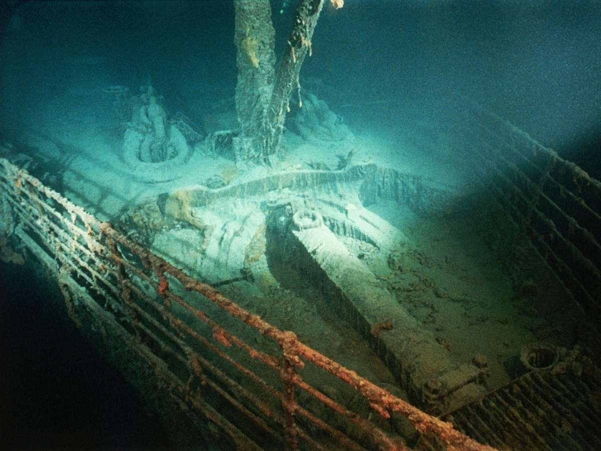
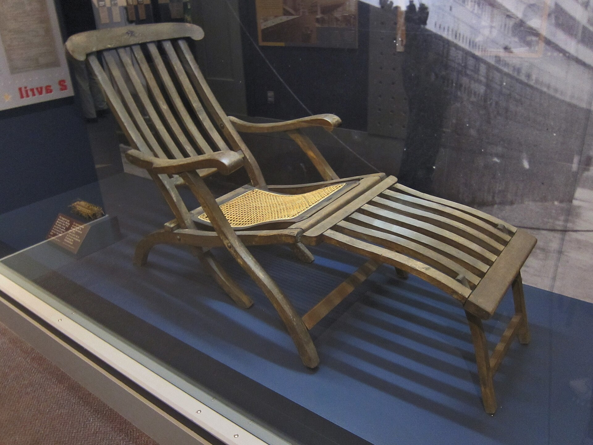
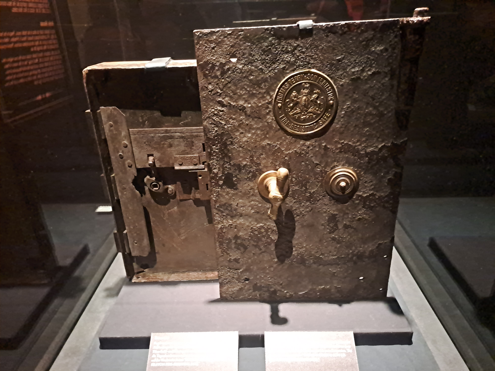
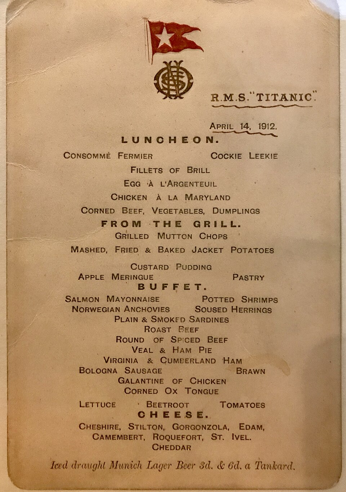
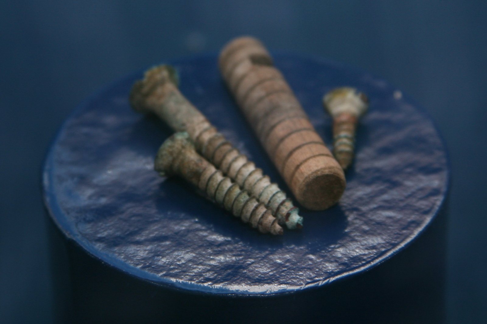

The Wreck
The wreck of the Titanic was discovered in 1985 in the North Atlantic Ocean. It lies almost 4,000 meters below the surface. During the sinking, the ship broke into two main sections, and both parts now rest on the ocean floor surrounded by debris.
The wreck gave researchers important information about how the Titanic sank. Because the wreck is located so deep underwater, scientists use special submarines, underwater cameras, sonar, and remotely operated vehicles to study it.


Recovered Objects
Many objects connected to Titanic have been preserved or recovered. Some were taken from the wreck site, while others survived because passengers carried them away or because they were preserved by families, museums, and collectors.
These objects include furniture, menus, tools, personal items, dishes, safes, clothing, and parts of the ship. They help visitors understand that Titanic was not only a famous ship, but also a place where thousands of people ate, slept, worked, and traveled.
Artifact Gallery




Why are artifacts important?
Artifacts give historians physical evidence from the past. They help researchers learn about daily life, technology, social class, and the experiences of passengers and crew members.
Where can Titanic artifacts be seen?
Many Titanic objects are displayed in museums and exhibitions around the world. These displays help visitors connect historical facts with real physical objects.
Why are some objects left underwater?
The wreck is extremely fragile and is also considered an important historical site. Because of this, there are legal and ethical debates about which objects should be recovered and which should remain on the ocean floor.
The Ship Today
More than a century after the sinking, the Titanic wreck continues to slowly deteriorate. Salt water, pressure, bacteria, and corrosion are damaging the metal structure.
Researchers continue to photograph and scan the wreck so that they can create detailed records of its condition. Modern technology allows historians to study parts of the ship that were impossible to examine when the wreck was first discovered.